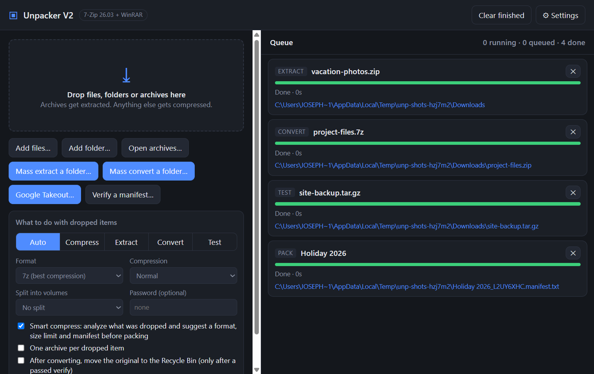
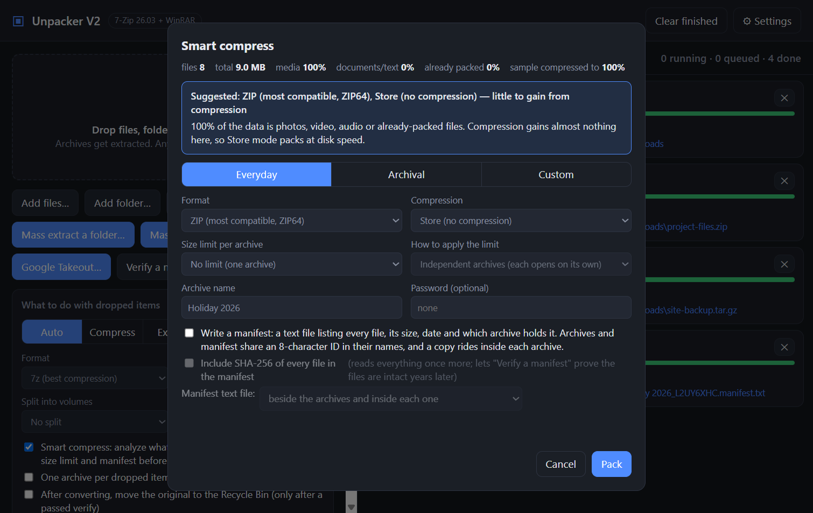
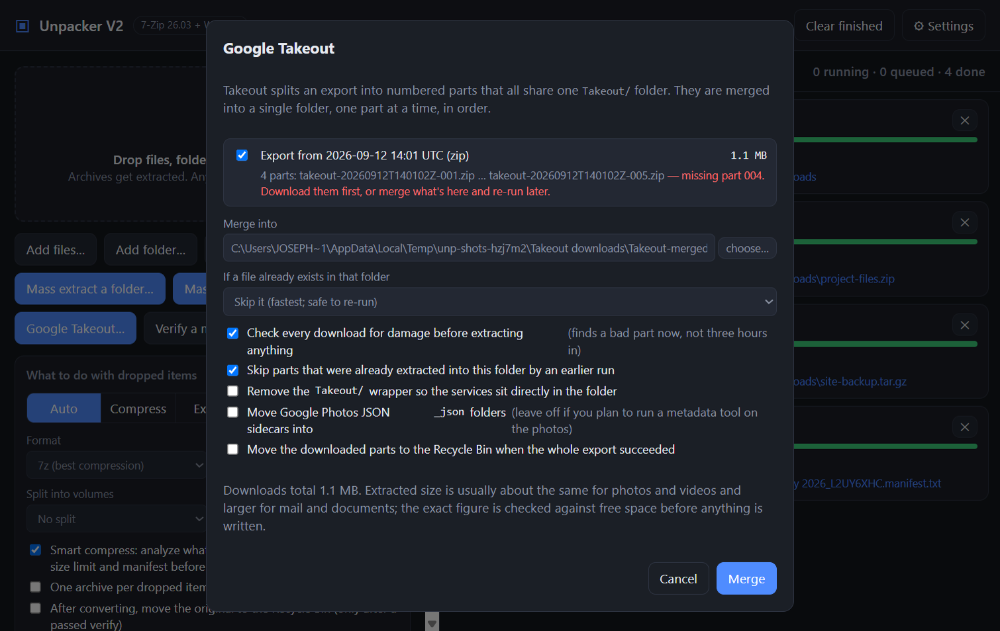
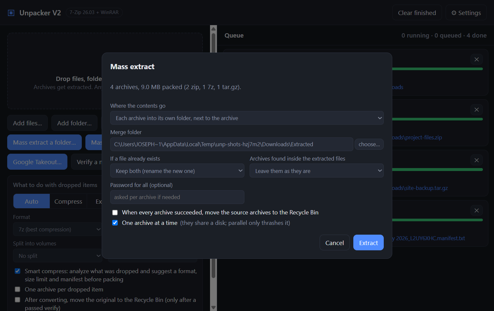
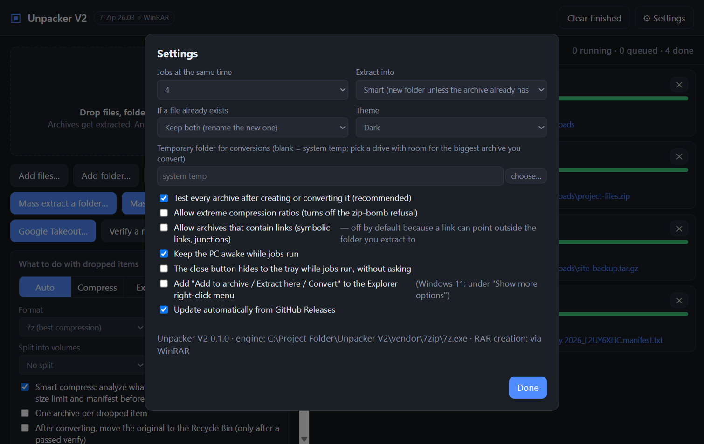

A drag-and-drop Windows archiver on the 7-Zip engine. Extract anything, compress with a suggestion that fits the files, merge Google Takeout exports, and build size-limited archival sets you can verify years later.

ZIP, 7z, RAR/RAR5, tar and tar.gz/xz/bz2/zst, cab, iso, wim, split sets. Encrypted archives ask for a password instead of failing.
Analyzes what you dropped and suggests Store for media, solid 7z for documents, capped blocks for mixed sets. Everyday, Archival and Custom presets.
1–50 GB per archive as independent archives or volumes. An 8-character ID links the set and a manifest with optional SHA-256; verify it later.
Groups the numbered parts, flags missing ones, checks every download first, then merges them one at a time. Interrupted runs resume.
Point it at a folder of mixed archives. Each into its own folder or all merged; nested archives too; sources binned only when everything succeeded.
Keeps the PC awake, asks before closing, removes half-written archives on cancel, refuses archives that could write outside the target.




git clone https://github.com/AxialForge/unpacker-v2.git cd unpacker-v2 npm install npm run dev